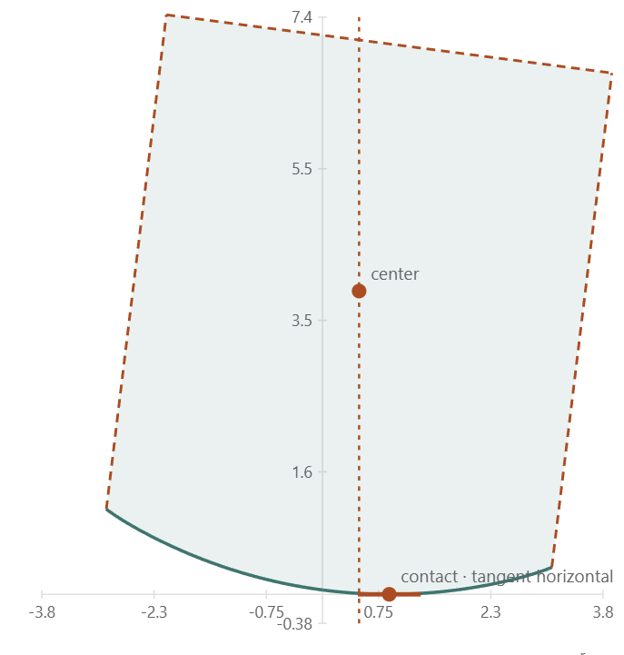

The geometry of a rocking body
A rectangular body rocking on two corners is a deceptively compact mechanical system. Its pivot switches discontinuously as the body crosses the vertical position, while its center of mass follows a circular arc around whichever corner is active.
One shape, two pivots
Let r be the distance from a bottom corner to the center of mass and let α be the angle from the vertical to that radius. The aspect ratio determines the tipping angle: slender bodies have a smaller geometric threshold than squat bodies.

Figure 1. The geometry lab visualizes the transition between the two pivot descriptions.
Why smooth the sign function?
The classical model uses a sign function to switch the pivot at zero angle. That is physically meaningful but awkward for a real-time ODE solver. A smoothstep approximation preserves the limiting behavior while making the right-hand side differentiable over a small transition width.
Explore the transition directly in the Smoothstep Geometry Lab, then continue to the threshold experiment.